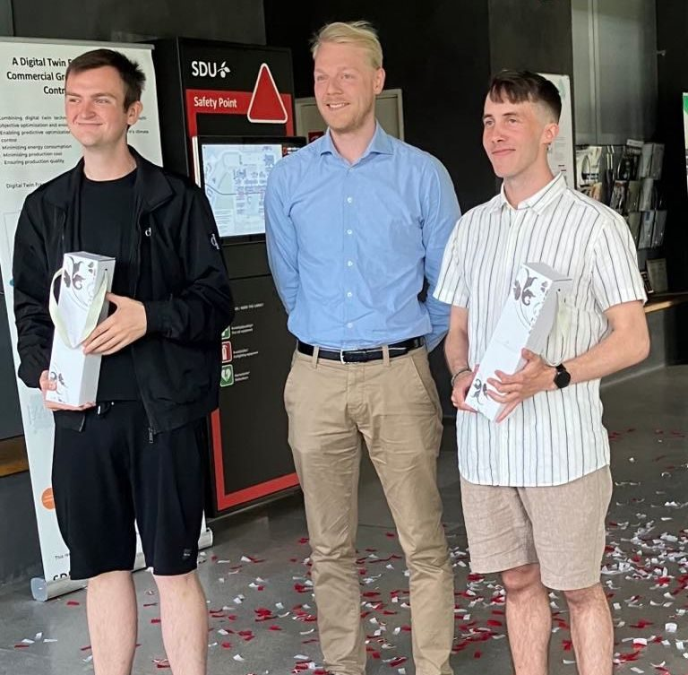
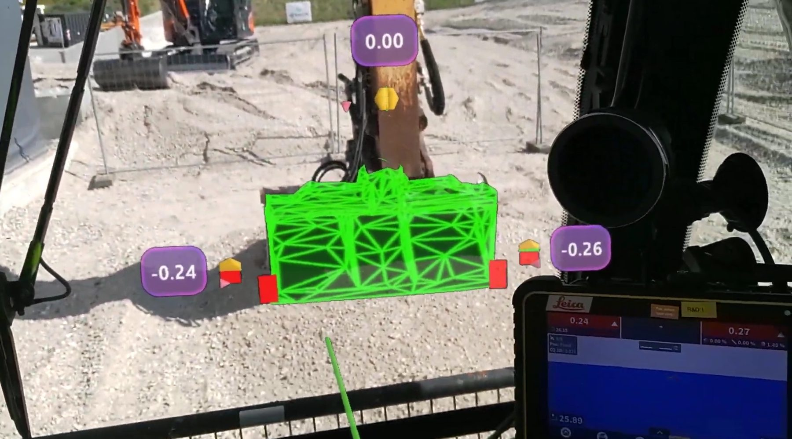
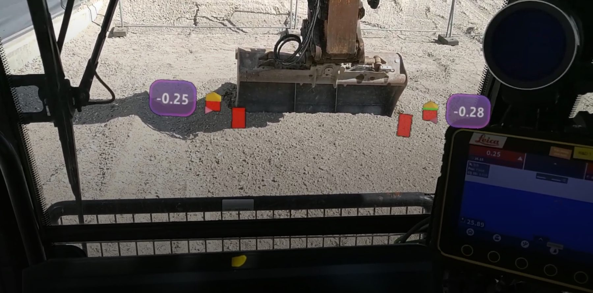
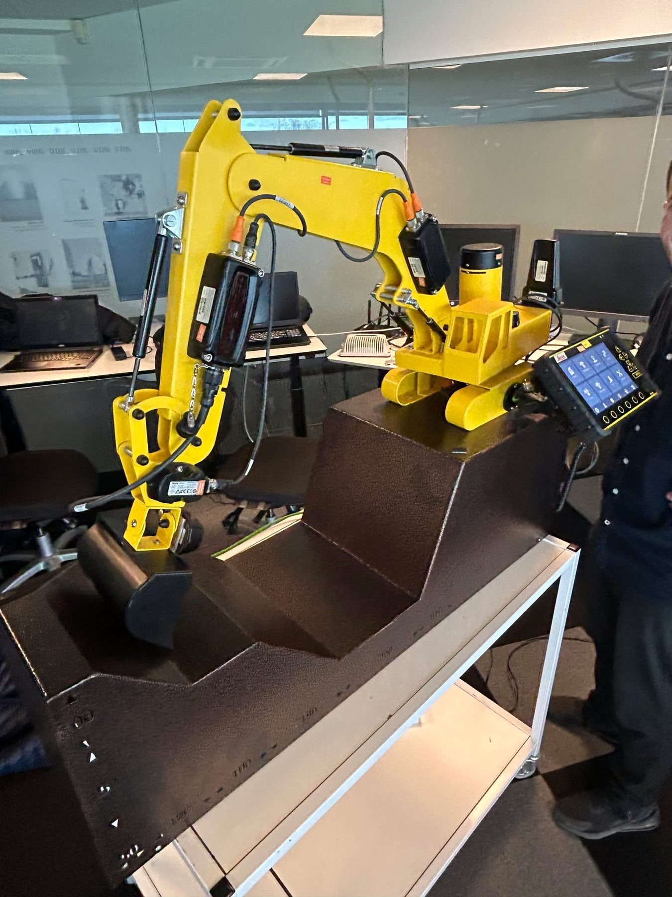
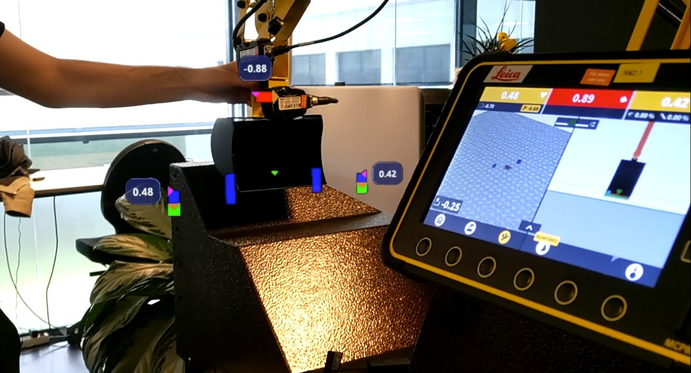
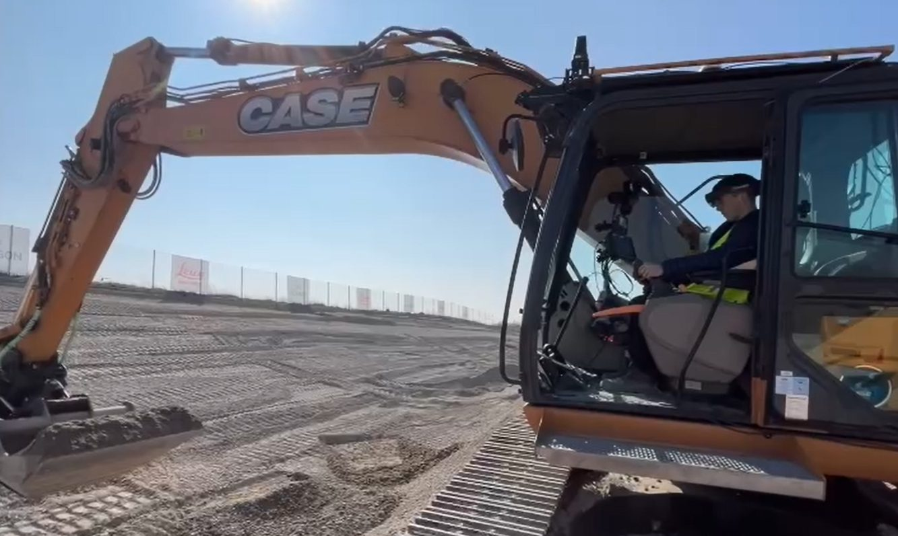
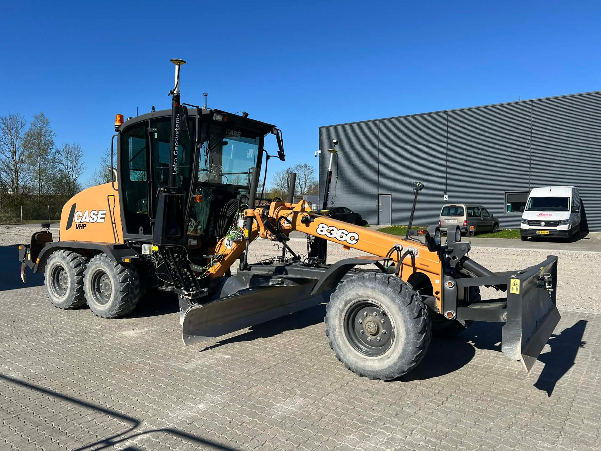
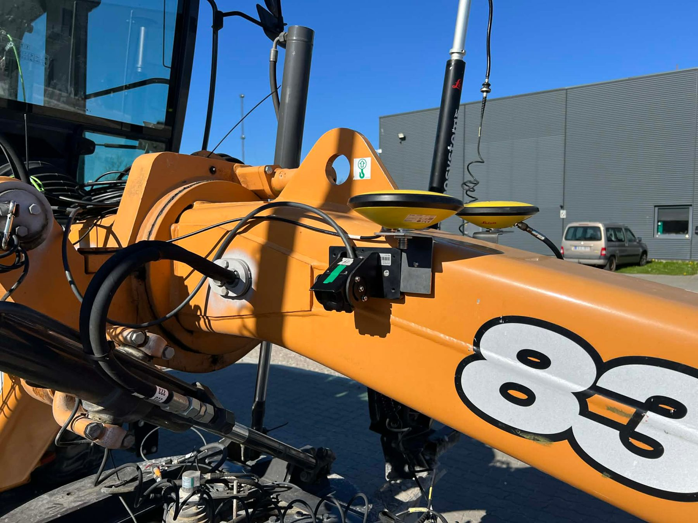
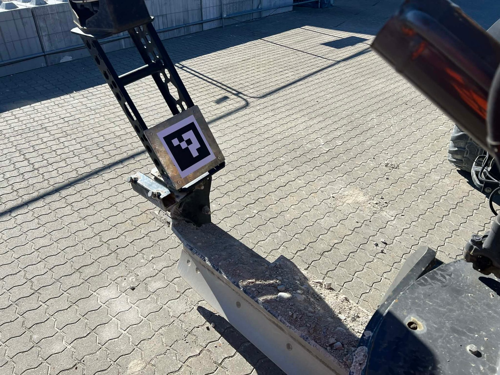
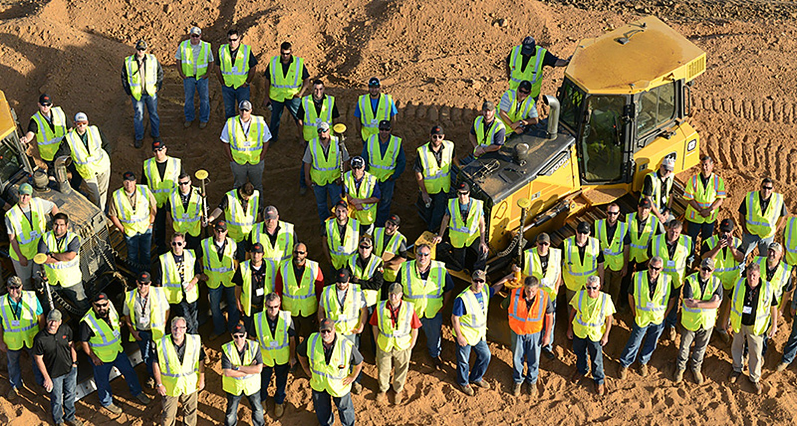

Bachelor defence · 2025
Defended. Delivered. Celebrated.
Two SDU students, one AR prototype for excavators, and a company mentor by their side from day one to the champagne moment.
Open student projects
Student projects with Leica Geosystems Machine Control — computer vision, sensor fusion, GPU acceleration and VR on excavators, dozers and graders.
Previous projects
Student projects at Leica Geosystems — AR, VR, computer vision, sensor fusion. Here's what earlier students built with us.

Bachelor defence · 2025
Two SDU students, one AR prototype for excavators, and a company mentor by their side from day one to the champagne moment.
AR for excavator operators


From lab to field




Grader blade tracking
Sensor fusion in the field
Track the blade without sacrificing its manoeuvrability.


Your turn
Open student projects: VR teleoperation · construction site mapping · pose estimation · machine positioning · bucket recognition · people & obstacle detection.
Student job · We're hiring
We are looking for a motivated student programmer to join our On Machine Software team in Leica's Machine Control Division in Odense and contribute across the complete software development workflow.
Contact Martin Reich →
You will work alongside experienced engineers on solutions for the heavy construction industry. In our On Machine Software department, we are developing embedded devices running RTOS and Linux, deployed on excavators or dozers with the intent to guide and control construction workflows.
The role provides an opportunity to gain practical experience, develop your technical skills, and learn how professional software is designed, built, tested, and maintained.
As a student programmer, you will take part in a broad range of software activities. Depending on current priorities and your interests, your work may include development, validation, maintenance tasks and improving the tools that support our teams. You will be based at our headquarters in Odense with access to our T-Site, where our solution is running on real construction machines.
We are looking for a student who is curious, structured, and eager to learn. You are currently studying software engineering, robotics, computer science, or a related field and have some programming experience from your studies, personal projects, or previous work.
You enjoy solving problems, take responsibility for your tasks, and communicate well with others. Familiarity with software development, testing, automation, or development tools is an advantage, but we value motivation and willingness to learn above specific technologies.
If you would like to learn more about the opportunity, please reach out to Martin Reich.
martin.reich@leica-geosystems.com